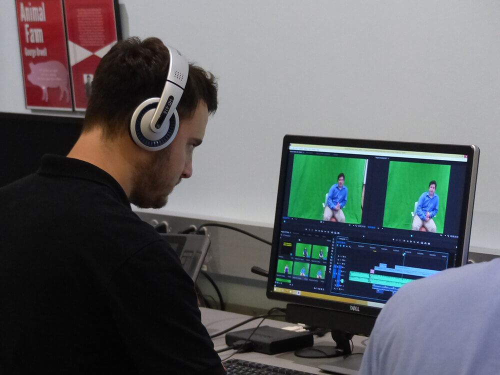
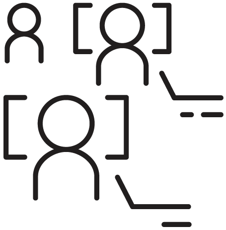

Computer Science
The Computer Science major focuses on the design and development of software and the algorithms that
make code work efficiently. Computer Science majors at Elms College will become proficient in many
programming languages and standards such as C#, Javascript, Python, HTML/CSS, and SQL.
Information Technology
The Computer Information Technology & Security (CITS) major prepares students for careers as IT professionals, providing a breadth of knowledge and the skills necessary to become IT technicians, system administrators, network administrators, and cyber security specialists.
Graphic Design
We offer courses in graphic design, web design, digital illustration, imagery for business, animation, game design, photography, and video production and editing. Our hands-on courses are taught in the CIT Lab using Wacom Cintiq drawing tablets and the state-of-the-art software.


Social Media
Social media majors at Elms develop technical skills geared toward hands-on digital work. You'll learn the basics of digital photography, video production, web design, and graphic design, and have the opportunity to pursue your passion through class projects and internships.
Computer Science
The Computer Science major focuses on the design and development of software and the algorithms that
make code work efficiently. Computer Science majors at Elms College will become proficient in many
programming languages and standards such as C#, Javascript, Python, HTML/CSS, and SQL.
Information Technology
The Computer Information Technology & Security (CITS) major prepares students for careers as IT
professionals, providing a breadth of knowledge and the skills necessary to become IT technicians,
system administrators, network administrators, and cyber security specialists.
Graphic Design
We offer courses in graphic design, web design, digital illustration, imagery for business, animation,
game design, photography, and video production and editing. Our hands-on courses are taught in the CIT
Lab using Wacom Cintiq drawing tablets and the state-of-the-art software.
Social Media
Social media majors at Elms develop technical skills geared toward hands-on digital work. You'll learn
the basics of digital photography, video production, web design, and graphic design, and have the
opportunity to pursue your passion through class projects and internships.
Dr. Hoffman's research interests include artificial intelligence, computational linguistics, and
educational technology.
B.A., Wellesley College, M.S.E., Ph.D. University of Pennsylvania
Laura Coulombe is a part time educator as well as a web and graphic designer. Her research interests
include the implications of social media in the business industry as well as continuing study into
the
evolving skills and techniques of the web, graphic and video game design industries.
B.A., College of Our Lady of the Elms M.S., Bay Path College